사회조사분석사-2급 (2012-08-26 기출문제)
1과목: 조사방법론 I
1. 다음 중 일반적으로 가장 높은 응답률을 확보 할 수 있는 조사 방법은?
- 우편설문법
- 직접면접법
- 전화설문법
- 전자서베이
(정답률: 80%)

2. 다음 중 우편조사의 특성과 가장 거리가 먼 것은?
- 면접자로 인한 편향이 적다.
- 넓은 지역을 조사할 수 있다.
- 모호한 응답에 대해 확인할 수 없다.
- 조사대상이 아닌 사람의 응답을 통제하기 용이하다.
(정답률: 75%)
3. 연구방법으로서의 연역적 접근법과 귀납적 접근법에 관한 설명으로 틀린 것은?
- 연역적 접근법을 취하려면, 기존 이론에 대한 분석이 필요하다.
- 귀납적 접근법은 현실세계에 대한 관찰을 통해 경험적 일반화를 추구한다.
- 사회조사에서 연역적 접근법과 귀납적 접근법은 상호보완적으로 사용된다.
- 연역적 접근법은 탐색적 연구에, 귀납적 접근법은 가설검증에 주로 사용된다.
(정답률: 79%)
4. 참여관찰(participant observation)에 대한 설명으로 틀린 것은?
- 연구 설계 및 착수가 용이하다.
- 연구의 설계과정에서 융통성이 높다.
- 직접 참여해서 현상을 관찰·기술하는 방법이다.
- 양적자료이기 때문에 대규모 모집단에 대한 기술이 쉽다.
(정답률: 79%)
5. 질적연구에 관한 옳은 설명을 모두 짝지은 것은?
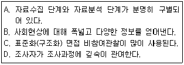
- A, B
- A, C
- B, C
- B, D
(정답률: 72%)
6. 인과관계의 일반적인 성립조건과 가장 거리가 먼 것은?
- 시간의 선행성(temporal precedence)
- 공변관계(covariation)
- 비허위적 관계(lack of spuriousness)
- 연속변수(continuous variable)
(정답률: 63%)
7. 다음은 어떤 조사연구 결과의 일부분이다. 여기에 사용된 분석의 단위는?
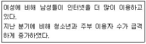
- 개인
- 집단
- 조직
- 사회적 가공물
(정답률: 57%)
8. 해결 가능한 연구문제가 되기 위한 조건이 아닌 것은?
- 기존의 이론 체계와 관련이 있어야 한다.
- 연구현상이 실증적으로 검증 가능해야 한다.
- 연구문제가 관찰 가능한 현상과 밀접히 연결되어야 한다.
- 연구대상이 되는 현상에 대해 명확한 규정이 되어야 한다.
(정답률: 61%)
9. 내용분석에 관한 설명으로 틀린 것은?
- 비개입적 연구이다.
- 표본추출은 하지 않는다.
- 코딩을 위해서는 개념화 및 조작화가 잘 이루어져야 한다.
- 책을 내용 분석할 때, 분석단위는 페이지, 단락, 줄 등이 가능하다.
(정답률: 66%)
10. 다음 중 표적집단면접(focus group interview)에 관한 설명으로 옳은 것은?
- 전문적인 지식을 가진 집단으로 하여금 특정한 주제에 대하여 자유롭게 토론하도록 한 다음, 토론 과정을 분석하여 필요한 정보를 추출하는 방법이다.
- 응답자가 조사의 목적을 모르는 상태에서 다양한 심리적 의사소통법을 이용하여 자료를 수집하는 방법이다.
- 조사자가 한 단어를 제시하고 응답자가 그 단어로부터 연상되는 단어들을 순서대로 나열하도록 하여 조사하는 방법이다.
- 응답자에게 이해하기 난해한 그림을 제시한 다음, 그 그림이 무엇을 묘사 하는지 물어 응답자의 심리 상태를 파악하는 방법이다.
(정답률: 84%)
11. 다음은 어떤 조사방법에 관한 설명인가?
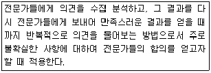
- 심층면접법
- 표적집단 조사
- 사회지표 분석
- 델파이 기법
(정답률: 60%)
12. 다음 중 표준화 면접의 장점과 가장 거리가 먼 것은?
- 신뢰도가 높다.
- 타당도가 높다.
- 면접결과의 수치화가 용이하다.
- 정보의 비교가 용이하다.
(정답률: 57%)
13. 두 개 이상의 구성개념 또는 변수간의 관계를 검정 가능한 형태로 서술한 문장으로써 과학적 조사에 의하여 검정이 가능한 사실을 말하는 것은?
- 패러다임(paradigm)
- 법(law)
- 가설(hypothesis)
- 이론(theory)
(정답률: 75%)
14. 다음 중 조사결과의 일반화와 가장 관련이 깊은 것은?
- 내적 타당도
- 외적 타당성
- 신뢰성
- 자료수집방법
(정답률: 60%)
15. 설문지 작성에서 폐쇄형 질문과 비교한 개방형 질문에 관한 설명으로 틀린 것은?
- 개방형 질문은 자료처리가 더 용이하다.
- 개방형 질문은 예비조사 시에 더 유용하다.
- 개방형 질문을 통해 생각하지 못한 의견을 더 얻을 수 있다.
- 개방형 질문은 무응답과 불성실한 응답이 나올 가능성이 더 많다.
(정답률: 78%)
16. 통제집단 사전사후측정설계(pretest-posttest control group design)의 핵심적 특징을 모두 짝지은 것은?
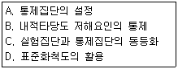
- A, B
- C, D
- A, B, C
- A, B, C, D
(정답률: 34%)
17. 관찰시기와 행동발생시기의 일치여부를 기준으로 관찰기법을 분류한 것은?
- 직접(direct)/간접(indirect) 관찰
- 자연적(natural setting)/인위적(contrived setting) 관찰
- 체계적(structured)/비체계적(unstructured) 관찰
- 공개적(undisguised)/비공개적(disguised) 관찰
(정답률: 60%)
18. 다음 중 탐색적 조사방법(exploratory research)에 해당하지 않는 것은?
- 유관분야의 관련문헌 조사
- 연구문제에 정통한 경험자를 대상으로 한 조사
- 변수간의 상관관계에 관한 조사
- 통찰력을 얻을 수 있는 소수의 사례조사
(정답률: 75%)
19. 다음 중 분석단위와 관련된 잠재적 오류와 가장 거리가 먼 것은?
- 동어반복의 오류
- 생태학적 오류
- 개인주의적 오류
- 환원주의적 오류
(정답률: 73%)
20. 심층면접 시 중요하게 고려해야 할 사항으로 틀린 것은?
- 피면접자와 친밀한 관계(rapport)를 형성해야 한다.
- 비밀보장, 안정성 등 피면접자가 편안한 분위기를 느낄 수 있도록 해야 한다.
- 피면접자의 대답을 주의 깊게 경청하여야 하며, 이전의 응답과 연결시켜 생각하는 습관을 가져야 한다.
- 피면접자가 대답을 하는 도중에 응답내용에 대해 평가적인 코멘트를 자주해 주는 것이 좋다.
(정답률: 79%)
21. 인간의 무의식 속에 내재되어 있는 가치, 태도 등을 알아내기 위하여 모호한 자극을 응답자에게 제시하여 반응을 알아보는 자료수집 방법은?
- 관찰법(obsrvational method)
- 면접법(depth interview)
- 투사법(projective technique)
- 내용분석법(content analysis)
(정답률: 76%)
22. 다음 중 가급적 적은 수의 변수로, 보다 많은 현상을 설명하고자 하는 것은?
- 간결성의 원칙(principle of parsimony)
- 관료제의 철칙(iron law of bureaucracy)
- 배제성의 원칙(principle of exclusiveness)
- 포괄성의 원칙(principle of exhaustiveness)
(정답률: 58%)
23. 양적연구와 질적연구에 관한 설명으로 틀린 것은?
- 양적연구는 연구대상의 관계를 통계적으로 분석을 통하여 밝히는 연구이다.
- 질적연구는 강제적 측정과 통제된 측정을 이용하는 방법이다.
- 질적연구는 주관적ㆍ해석적 연구방법이다.
- 양적연구는 확인 지향적 또는 확증적 연구방법이다.
(정답률: 72%)
24. 연구에 사용할 가설이 좋은 가설인지 여부를 판단하기 위한 평가기준과 거리가 먼 것은?
- 가설의 표현은 간단명료해야 한다.
- 가설은 계량화 할 수 있어야 한다.
- 가설은 경험적으로 검증할 수 있어야 한다.
- 동일 연구분야의 다른 가설이나 이론과 연관이 없어야 한다.
(정답률: 78%)
25. 다음 중 면접의 바람직한 요령과 가장 거리가 먼 것은?
- 되도록 면접은 간략히 한다.
- 면접 시에 제3자가 개입하지 못하도록 한다.
- 면접대상자에게 신분을 알리기 위해 신분증을 제시한다.
- 면접자는 면접표의 정리된 순서에 구애받지 않고 자유롭게 하는 것이 좋다.
(정답률: 68%)
26. 다음 질문문항이 가지고 있는 가장 큰 문제점은?
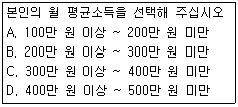
- 응답 범주의 의미가 불분명하다.
- 응답 범주들의 간격이 일정하지 않다.
- 응답 범주들 간의 관계가 상호배타적이지 않다.
- 응답 가능한 상황들을 모두 포함하고 있지 않다.
(정답률: 75%)
27. 개별적인 질문이 결정된 이후 응답자에게 제시하는 질문순서에 관한 설명으로 틀린 것은?
- 특수한 것을 먼저 묻고 그 다음에 일반적인 것을 질문하도록 하는 것이 좋다.
- 질문내용은 가급적 구체적인 용어로 표현하는 것이 좋다.
- 개인 사생활에 관한 질문과 같이 민감한 질문은 가급적 뒤로 배치하는 것이 좋다.
- 질문은 논리적인 순서에 따라 자연스럽게 배치하는 것이 좋다.
(정답률: 80%)
28. 다음은 어떤 설계방식에 해당하는가?
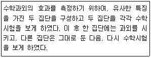
- 집단비교설계(static-group comparison)
- 솔로몬 4집단 설계(Solomon four-group design)
- 통제집단 사후측정설계(posttest-only control group design)
- 통제집단 사전사후측정설계(pretest-posttest control group design)
(정답률: 59%)
29. 다음 중 과학적 연구에 관한 설명으로 틀린 것은?
- 연구의 목적은 현상을 체계적으로 조사하고 분석하여 문제를 해결하는 것이다.
- 과학적 연구는 핵심적, 실증적 그리고 주관적으로 수행하는 것이다.
- 예측을 위한 연구는 이론에 근거하여 이루어진다.
- 연구의 결론은 자료가 제공하는 범위 안에서 내려져야 한다.
(정답률: 69%)
30. 질문지에 사용되는 질문이나 진술을 작성하는 원칙과 가장 거리가 먼 것은?
- 항목들이 명확해야 한다.
- 질문항목들은 되도록 짧아야 한다.
- 부정어가 포함된 질문을 반드시 포함.
- 편견에 치우친 항목과 용어를 지양한다.
(정답률: 81%)
2과목: 조사방법론 II
31. 다음 중 가장 많은 정보를 제공해주는 측정의 수준은?
- 서열측정
- 비율측정
- 등간측정
- 명목측정
(정답률: 66%)
32. 거트만척도에서 응답자의 응답이 이상적인 패턴에 얼마나 가까운가를 측정하는 것은?
- 단일차원계수
- 스캘로그램
- 재생가능계수
- 최소오차계수
(정답률: 56%)
33. 구성타당도(construct validity)에 관한 옳은 설명을 모두 짝지은 것은?
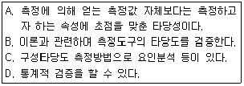
- A, D
- B, C, D
- A, B, C
- A, B, C, D
(정답률: 51%)
34. 사람들이 동정심을 측정하기 위해, 동정심을 지하도 입구의 거지에게 자선을 베푸는 정도로 정의 하였다면, 이러한 정의는 무엇이라고 하는가?
- 개념적 정의
- 실제적 정의
- 조작적 정의
- 사전적 정의
(정답률: 64%)
35. 신뢰도와 타당도에 관한 설명으로 틀린 것은?
- 문항의 질과 관계없이 문항수가 많을수록 신뢰도는 증가한다.
- 신뢰도가 높다고 해서 반드시 타당도가 높은 것은 아니다.
- 타당도란 측정한 값과 진정한 값과의 일치 정도를 의미한다.
- 신뢰도란 반복 측정 결과의 일관성과 관련이 있다.
(정답률: 67%)
36. 측정방법에 따라 측정을 구분할 때, 밀도(density)와 같이 어떤 사물이나 사건의 속성을 측정하기 위해 관련된 다른 사물이나 사건의 속성을 측정하는 것은?
- 추론측정(derived measurement)
- 임의측정(measurement by fiat)
- 본질측정(fundamental measurement)
- A급 측정(measurement of A magnitude)
(정답률: 51%)
37. 측정도구의 내용타당도를 평가하는 방법과 가장 거리가 먼 것은?
- 관련 분야 전문가들의 자문을 구한다.
- 측정대상과 관련된 이론들을 판단기준으로 사용한다.
- 패널토의나 워크숍 등을 통하여 타당도에 관한 의견을 수렴한다.
- 측정도구를 반복하여 측정하고 그 관계를 알아본다.
(정답률: 63%)
38. 모집단을 동질적인 특성을 가진 몇 개의 집단으로 구분하고 각 집단 별로 표본을 추출하는 방법을 모두 짝지은 것은?
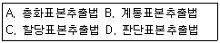
- A, D
- A, C
- B, D
- A, B, C
(정답률: 62%)
39. 서열측정을 위한 방법으로 단순합산법을 사용하는 대표적인 척도는?
- 거트만(Guttman)척도
- 서스톤(Thurstone)척도
- 리커트(Likert)척도
- 보가더스(Bogardus)척도
(정답률: 58%)
40. 일반적인 표본추출과정을 바르게 나열한 것은?
- 표본크기 결정 → 모집단 확정 → 표본틀 결정 → 표본추출방법 결정 → 표본추출
- 모집단 확정 → 표본크기 결정 → 표본틀 결정 → 표본추출방법 결정 → 표본추출
- 모집단 확정 → 표본틀 결정 → 표본추출방법 결정 → 표본크기 결정 → 표본추출
- 표본틀 결정 → 모집단 확정 → 표본크기 결정 → 표본추출방법 결정 → 표본추출
(정답률: 69%)
41. 어떤 제품의 선호도를 조사하기 위해, “아주 좋아한다, 좋아한다, 싫어한다, 아주 싫어한다”와 같은 보기를 사용하였다. 이는 어떤 척도로 측정된 것인가?
- 서열척도
- 명목척도
- 등간척도
- 비율척도
(정답률: 69%)
42. 인간의 지능을 머리의 크기로 측정하였다면 머리의 크기라는 측정도구는 어떤 문제가 있는가?
- 신뢰도
- 타당도
- 내적일관성
- 무작위적 오류
(정답률: 72%)
43. 다음 중 확률표본추출방법(probability sampling)에 해당하는 것은?
- 단순무작위표본추출(sampl random sampling)
- 유의표본추출(purposive sampling)
- 눈덩이표본추출(snowball sampling)
- 할당표본추출(quota sampling)
(정답률: 71%)
44. 다음 중 측정에 관한 설명으로 틀린 것은?
- 측정이란 사물이나 사건의 속성에 수치를 부여하는 작업이다.
- 측정에서는 연구자의 주관적인 판단이 중요한 기능을 한다.
- 경험의 세계와 추상적인 관념의 세계를 연결하는 기능을 가진다.
- 측정은 과학적 연구에서 필수적이다.
(정답률: 66%)
45. 표본의 하위집단 분포를 의도적으로 정하여 표본을 임의로 추출하는 방법은?
- 편의표본추출법(convenience sampling)
- 군집표본추출법(cluster sampling)
- 눈덩이표본추출(snowball sampling)
- 할당표본추출법(quota sampling)
(정답률: 43%)
46. 척도구성방법을 비교척도구성(comparative scaling)과 비비교척도구성(non-comparative scaling)으로 구분할 때 비교척도구성에 해당하지 않는 것은?
- 쌍대비교법(paired comparison)
- 순위법(rank-order)
- 연속평정법(continuous rating)
- 고정총합법(constant sum)
(정답률: 48%)
47. 1000명으로 구성된 모집단에서 100명을 뽑아 연구를 하고자 할 때 첫번째 사람은 무작위로 추출하고 그 다음부터는 목록에서 매 10번째 사람을 뽑아 표본을 구성하는 것은 어떤 표본추출방법에 해당하는가?
- 단순무작위표본추출(simple random sampling)
- 체계적표본추출(systematic sampling)
- 층화표본추출(stratified sampling)
- 편의표본추출(convinience sampling)
(정답률: 72%)
48. 매개변수(intervening variable)에 관한 설명으로 옳은 것은?
- 원인변수 혹은 가설변수라고 하는 것으로서 사전에 조작되지 않은 변수를 의미한다.
- 결과변수라고 하며, 독립변수의 원인을 받아 일정하게 변화된 결과를 나타내는 기능을 하는 변수를 의미한다.
- 결과변수에 영향을 미치면서도 그 이유를 제대로 설명하지 못하는 변수를 의미한다.
- 개입변수라고도 불리며, 종속변수에 일정한 영향을 주는 변수로 독립변수에 의하여 설명되지 못하는 부분을 설명해 주는 변수를 말한다.
(정답률: 69%)
49. 실험에서 인과관계를 추론하기 위해서 서로 다른 값을 갖도록 처치를 하는 변수를 무엇이라고 하는가?
- 외적변수(extraneous variable)
- 종속변수(dependent variable)
- 매개변수(intervening variable)
- 독립변수(independent variable)
(정답률: 65%)
50. 집락표본추출(cluster sampling)에 관한 설명으로 틀린 것은?
- 확률표본추출(probability sampling)의 하나로써 표본오차의 크기를 계산할 수 있다.
- 완전한 표본틀(sampling frame)이 없는 경우에도 사용가능하며, 비교적 비용이 적게 든다는 장점이 있기 때문에 전국규모의 조사에 많이 사용된다.
- 집락 내에서는 동질성이 크고 집락 간에는 이질성이 크도록 집락을 설정하면, 표본오차(sampling error)와 조사비용을 동시에 줄일 수 있다.
- 조사자의 필요에 따라서는 집락을 2개 이상의 단계에서 설정할 수도 있다.
(정답률: 58%)
51. 사음 사례에서 사용한 척도는?
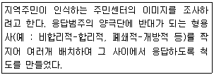
- 이미지(image) 척도
- 거트만(Guttman) 척도
- 서스톤(Thurstone) 척도
- 의미분화(semantic differential)척도
(정답률: 66%)
52. 측정오차(error of measurement)에 관한 설명으로 틀린 것은?
- 비체계적 오차는 상호상쇄(self-compensation)되는 경향도 있다.
- 체계적 오차는 항상 일정한 방향으로 작용하는 편향(bias)이다.
- 비체계적 오차는 측정대상, 측정과정, 측정수단 등에 따라 일관성 없이 영향을 미침으로써 발생한다.
- 측정의 오차를 신뢰성 및 타당성과 관련지었을 때 신뢰성과 타당성을 정도의 개념이 아닌 존재개념이다.
(정답률: 65%)
53. 조작적 정의에 관한 설명으로 틀린 것은?
- 실제측정의 전(前) 단계이다.
- 관찰가능성 여부가 중요하다.
- 특정개념은 한 가지의 조작적 정의를 갖는다.
- 추상적인 개념을 구체적인 경험세계와 연결시키는 과정이다,
(정답률: 64%)
54. 동일한 상황에서 동일한 측정도구를 사용하여 동일한 대상을 일정한 간격을 두고 2번 이상 측정하여 그 결과를 비교하여 신뢰성을 측정하는 방법은?
- 재검사법(test-retest method)
- 복수양식법(parallel-forms technique)
- 반분법(split-half method)
- 내적일관성법(internal consistency method)
(정답률: 71%)
55. 사회과학에서 척도를 사용하는 이유와 가장 거리가 먼 것은?
- 하나의 지표로는 측정하기 어려운 복합적인 개념을 측정 가능하다.
- 변수에 대한 양적 측정치를 제공함으로 통계적 조작이 가능하다.
- 여러 개의 지표를 하나의 점수로 나타내어 자료를 단순화한다.
- 척도는 양적인 속성을 질적인 계열로도 전환 가능하다.
(정답률: 67%)
56. 사회과학에서 척도를 사용하는 이유와 가장 거리가 먼 것은?(오류 신고가 접수된 문제입니다. 반드시 정답과 해설을 확인하시기 바랍니다.)
- 하나의 지표로는 측정하기 어려운 복합적인 개념을 측정가능하다.
- 변수에 대한 양적 측정치를 제공함으로 통계적 조작이 가능하다.
- 여러 개의 지표를 하나의 점수로 나타내어 자료를 단순화 한다.
- 척도는 양적인 속성을 질적인 계열로도 전환이 가능하다.
(정답률: 9%)
57. 눈덩이표본추출(snowball sampling)에 관한 설명으로 틀린 것은?
- 사회적 연결망을 이용한 표본추출방법이다.
- 모집단의 구성비율을 이용해서 표본을 추출하는 방법이다.
- 희귀한 사건이나 현상에 대해 조사할 때 주로 사용한다.
- 확률적 표본추출방법이 아니므로 통계적 추론을 할 수 없다.
(정답률: 55%)
58. 표본의 크기에 관한 설명으로 틀린 것은?
- 모집단의 동질성이 높으면 표본의 크기는 작아진다.
- 독립변수의 카테고리가 세분화될수록 표본의 크기는 커진다.
- 사용하고자 하는 변수의 수가 많을수록 표본수가 커져야한다.
- 표본의 크기가 같을 경우 단순무작위표본추출방법보다 층화표본추출방법을 사용하면 표본오차가 커진다.
(정답률: 66%)
59. 스피어만-브라운(Spearman-Brown) 공식은 어떤 경우에 사용되는가?
- 동형검사 신뢰도 추정
- Kuder-Richardson 신뢰도 추정
- 반분신뢰도로 전체 신뢰도 추정
- 범위의 축소로 인한 예언타당도에 대한 교정
(정답률: 56%)
60. 표본추출에 관한 설명으로 옳은 것은?
- 모집단 표본추출틀(sampling frame)이 일치하지 않을 경우 무응답오차가 나타난다.
- 표본의 크기는 질문지 내용과 문항길이에 따라 달라진다.
- 표본의 크기는 표본오차에 정비례하고 비표본오차에 반비례한다.
- 전수조사과정에서 발생하는 비표본오차 때문에 전수조사가 표본조사보다 부정확할 가능성이 있다.
(정답률: 62%)
3과목: 사회통계
61. 평균이 μ이고, 표준편차가 δ 인 모집단으로부터 크기가 짝수 n(=2m) 인 임의표본(확률표본)을 추출하였을 때 처음 m개의 평균
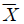
어떤 분포를 따르게 되는가?- 평균이 μ 이고 표준편차가
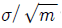
인 정규분포 - 평균이 μ 이고 표준편차가
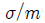
인 정규분포 - 평균이 μ 이고 표준편차가
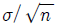
인 정규분포 - 평균이 μ 이고 표준편차가
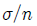
인 정규분포
(정답률: 34%)
62. 성별 평균소득에 관한 설문조사자료를 정리한 결과, 집단 내 평균제곱(mean squares within groups)은 50, 집단 간 평균제곱(mean squares between groups)은 25로 나타났다. 이 경우에 값은?
- 0.5
- 2
- 25
- 75
(정답률: 40%)
63. 통계조사시 한 가구를 조사하는데 소요되는 시간을 측정하기 위하여 64가구를 임의 추출하여 조사한 결과 평균 소요시간이 30분, 표준편차가 5분이었다. 한 가구를 조사하는데 소요되는 평균시간에 대한 95%의 신뢰구간하한과 상한은 각각 얼마인가? (단, Z0.025=1.96, Z0.⑤=1.645 )
- 28.8, 31.2
- 28.4, 31.6
- 29.0, 31.0
- 28.5, 31.5
(정답률: 44%)
64. 사회조사분석사 시험 응시생 500명의 통계학 성적의 평균점수는 70점 이고, 표준편차는 10점이라고 한다. 통계학 성적이 정규분포를 한다고 가정할 때, 성적이 50점에서 90점 사이인 응시자는 약 몇 명인가?(단, P(Z<2)=0.9772)
- 498명
- 477명
- 378명
- 250명
(정답률: 55%)
65. 어느 대리점에서 제품을 팔기 위하여 고객들을 면담하고 있다. 면담을 실시한 고객이 제품들을 구입할 확률은 0.2이고 고객들 사이에 물품구입 여부는 독립적이다. 3명의 사람이 면담하였을 때, 적어도 한 사람이 제품을 구매할 확률은?
- 0.800
- 0.512
- 0.488
- 0.160
(정답률: 63%)
66. A항아리에서 3개의 붉은 구슬과 2개의 흰구슬이 있고, B항아리에는 4개의 붉은 구슬과 3개의 흰구슬이 있다. A항아리에서 무작위로 하나를 꺼내 B항아리에 넣었다고 한다. B항아리에서 하나의 구슬을 꺼낼때, 붉은 구슬일 확률은?
- 0.08
- 0.58
- 0.38
- 0.20
(정답률: 48%)
67. 일반적인 단순 회귀모형에서 잔차에 의한 제곱합(sum of squares due to errors:SSE)이 4,339이고, 회귀에 의한 제곱합(sum of squares due to regression:SSR)이 11,963일 때, 표본의 결정계수는?
- 2.76
- 0.27
- 0.362
- 0.73
(정답률: 40%)
68. 4 × 5 분할표 자료에 대한 독립성검정을 위한 카이제곱 통계량의 자유도는?
- 9
- 12
- 19
- 20
(정답률: 57%)
69. 6개의 공정한 동전을 던져서 앞면이 나오는 개수를 X 라 할 때, X 의 평균과 분산은?
- 평균 : 3.0, 분산 : 1.25
- 평균 : 3.0, 분산 : 1.50
- 평균 : 2.5, 분산 : 1.25
- 평균 : 2.5, 분산 : 1.50
(정답률: 58%)
70. 성별과 지지하는 정당 사이에 관계가 있는지 알아보기 위해 다음 자료를 통해 카이제곱 검증을 하려고 한다. 남자 100명 중 A 정당 지지자 80명, B 정당 지지자 20명, 여자 100명중 A 정당 지지자 40명, B 정당 지지자 60명이다. 성별과 정당 사이에 관계가 없을 경우 남자와 여자 각각 몇 명이 A 정당을 지지한다고 기대할 수 있는가?
- 남자 : 40명, 여자 : 60명
- 남자 : 50명, 여자 : 50명
- 남자 : 60명, 여자 : 60명
- 남자 : 70명, 여자 : 30명
(정답률: 39%)
71. 분산이 동일한 정규분포를 따르는 두 모집단으로부터 표본을 추출하여 다음 표와 같은 결과를 구하였다. 이들 모집단의 분산의 추정치로 옳은 것은?
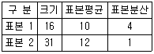
- 1
- 2
- 3
- 4
(정답률: 28%)
72. 어느 여론조사기관에서 고등학교 학생들의 흡연율을 조사하고자 한다. 95% 신뢰수준에서 흡연율 추정의 오차한계가 1% 이내가 되기 위한 표본의 크기는?(단, 표준정규분포를 따르는 확률변수 Z 는 P(Z>1.96)=0.025를 만족한다.)
- 6,604
- 7,604
- 8,604
- 9,604
(정답률: 46%)
73. 모집단 (1, 2, 3, 4)로부터 무작위로 2개의 수를 복원으로 추출한다. 추출한 두 숫자의 평균의 기댓값과 분산은?
- 기댓값 : 2.5, 분산 : 0.884
- 기댓값 : 1.25, 분산 : 0.625
- 기댓값 : 2.5 분산 : 0.625
- 기댓값 : 1.25 분산 : 0.884
(정답률: 35%)
74. 일원배치법 모형에 대한 분산분석 결과를 정리한 다음 분산분석표에 관한 설명으로 틀린 것은?
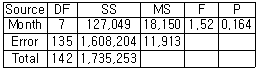
- 총 관측자료수는 142개이다.
- 인자의 Month로서 수준 수는 8개이다.
- 유의수준 0.⑤에서 인자의 효과가 인정되지 않는다.
- 오차항의 분산 추정값은 11913이다.
(정답률: 46%)
75. 다음 A병원과 B병원에서 각각 6명의 환자를 상대로 하여 환자가 병원에 도착하여 진료서비스를 받기까지의 대기시간(단위:분)을 조사한 것이다. 두 병원의 진료서비스 대기시간에 대한 비교로 옳은 것은?
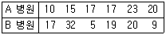
- A병원 평균 = B병원 평균, A병원 분산 < B병원 분산
- A병원 평균 = B병원 평균, A병원 분산 > B병원 분산
- A병원 평균 > B병원 평균, A병원 분산 < B병원 분산
- A병원 평균 < B병원 평균, A병원 분산 > B병원 분산
(정답률: 47%)
76. 다음 중 분산분석(ANOVA)에 관한 설명으로 틀린 것은?
- 분산분석은 두 개 이상의 집단간 평균차이를 검정할 때 사용된다.
- 분산분석은 연속형 변수인 종속변수가 분류변수라 일컬어지는 독립변수에의해 만들어진 실험조건에서 측정된 경우이다.
- 관측값의 영향을 주는 요인은 등간척도나 비율척도이다.
- 분산분석의 가설검정에는 F 분포 통계량을 이용한다.
(정답률: 33%)
77. 한국도시연감에 의하면 1998년 1월 1일 당시 한국도시들의 재정자립도 평균은 53.4%이고 표준편차는 23.4이다. 또한 이 자료에서 서울의 재정자립도는 98.0%로 나타났다. 서울 재정자립도의 표준점수(Z 값)는?
- 1.91
- -1.91
- 1.40
- -1.40
(정답률: 50%)
78. 다음 중 표본평균의 분포에 관한 설명으로 틀린 것은?
- 표본평균의 분포의 평균은 모집단의 평균과 동일하다.
- 표본의 크기가 어느 정도 크면 표본평균의 분포는 근사적 정규분포를 따른다.
- 표본평균의 분포는 모집단의 분포와 동일하다.
- 표본평균의 분포의 분산은 표본의 크기에 따라 달라진다.
(정답률: 38%)
79. 다음 중 상관분석을 위해 산점도에서 관찰해야 할 자료의 특징이 아닌 것은?
- 선형 또는 비선형 관계의 여부
- 이상점의 존재 여부
- 자료의 층화 여부
- 원점(0, 0)의 통과 여부
(정답률: 39%)
80. 행변수가 M 개의 범주를 갖고 열 번수가 N 개의 범주를 갖는 분할표에서 행변수와 열변수가 서로 독립인지를 검정하고자 한다. (i, j) 셀의 관측도수를 Oij, 귀무가설하에서의 기대도수의 추정치를
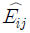
라 할 때, 이 검정을 위한 검정 통계량은?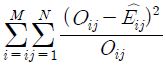
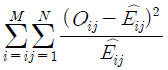
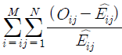
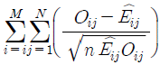
(정답률: 50%)
81. 다음은 중회귀식
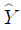
= 36.689 + 3.372X1 + 0.532X2의 회귀계수표 이다. 다음 ( )에 알맞은 값은?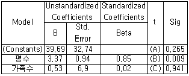
- A = 1.21, B = 3.59, C = 0.08
- A = 2.65, B = 0.09, C = 9.41
- A = 10.21, B = 36, C = 0.8
- A = 36.69, B = 3.96, C = 26.5
(정답률: 50%)
82. 어느 회사원이 승용차로 출근하는 길에 신호등이 5개있다고 한다. 각 신호등에서 빨간 등에 의해 신호 대기할 확률은 0.2이고, 각 신호등에서 신호 대기 여부는 서로 독립적이라고 가정한다. 어느 날 이 회사원이 5개의 신호등 중 1개의 신호등에서만 빨간 등에 의해 신호대기에 걸리고 출근할 확률을 구하는 식은?
- (0.2)1
- 1-(0.8)5
- (0.2)1(0.8)4
- 5(0.2)1(0.8)4
(정답률: 47%)
83. 평균이 μ 이고 분산이 δ2인 정규모집단으로부터 추출한 크기 100인 확률분포의 표본평균
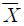
를 이용하여 가설 H0 : μ = 0 VS H1 : μ > 0 을 유의수준 0.⑤에서 검정하는 경우 기각역이 P ≥ 1.645 이다. 이 때 검정통계량 Z 에 해당하는 것은? (단, P(Z>1.645)=0.⑤)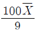
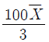
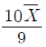
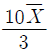
(정답률: 40%)
84. 단순회귀분석을 위하여 수집한 자료 10개에 대하여 다음의 요약된 값을 얻었다. 최소제곱법에 의하여 추정된 회귀직선은?
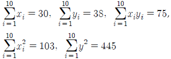
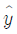
= 12.8 - 3x = 12.8-0.17x
= 12.8-0.17x = 4.19 - 3x
= 4.19 - 3x = 4.19 - 0.17x
= 4.19 - 0.17x
(정답률: 28%)
85. 독립시행의 횟수가 n 이고 성공확률이 p 인 이항분포에서 k번 이상의 성공이 발생할 확률을 바르게 표현한 것은?
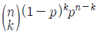
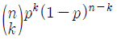
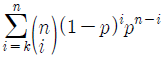
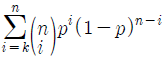
(정답률: 39%)
86. 다음 중 가설검정에 관한 설명으로 틀린 것은?
- 귀무가설이 참임에도 불구하고 귀무가설을 기각했을 때, 제 1종오류(type 1 error)가 일어났다고 한다.
- 유의확률이 유의수준보다 작으면, 귀무가설을 기각한다.
- 검정력(power)은 귀무가설이 참이 아닐 때, 귀무가설을 기각할 확률을 말한다.
- 검정통계량의 관측값이 기각역(rejection region)에 속하면 대립가설을 기각 한다.
(정답률: 58%)
87. 다음 중 왜도가 0이고 첨도가 3인 분포의 형태는?
- 좌우 대칭인 분포
- 왼쪽으로 기울어진 분포
- 오른족으로 길울어진 분포
- 오른쪽으로 기울어지고 뾰족한 모양의 분포
(정답률: 53%)
88. 확률변수 X 의 확률분포가 평균이 μ 이고 표준편차가 σ 인 정규분포 일 때의 설명으로 틀린 것은?
- Y = aX + b(a≠0) 이라면 Y는 N(aμ+b,a2σ2)을 따른다.
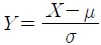
조 는 표준정규분포를 따른다.- 평균, 중위수, 최빈수가 모두 μ 이다.
- Y = aX + b(b≠0) 라면 확률변수 Y 의 표준편차는 aσ 이다.
(정답률: 31%)
89. 좋은 추정량의 조건이 아닌 것은?
- 편의성(biasness)
- 효율성(efficiency)
- 일치성(consistency)
- 충분성(sufficiency)
(정답률: 43%)
90. 서울에 거주하는 가구 중에서 명절에 귀향하려는 가구의 비율(p)을 알아보기 위해 500가구를 조사한 결과 100가구가 귀향하겠다고 응답 하였다. 서울거주 가구의 귀향비율 p의 95%의 신뢰구간은?(단, √5=2.24)
- (0.165, 0.235)
- (0.15, 0.25)
- (0.2, 0.235)
- (0.1, 0.3)
(정답률: 40%)
91. 모평균과 모분산이 알려지지 않은 정규모집단의 모분산에 대한 가설 검정에 사용되는 검정통계량은?
- Z - 통계량
- x2 -통계량
- t - 통계량
- F - 통계량
(정답률: 29%)
92. 자료에 대한 대푯값으로 평균(mean) 대신 중앙값(median)을 사용하는 이유로 가장 적합한 것은?
- 평균은 음수가 나올 수 있다.
- 대규모 자료의 경우 평균은 계산이 어렵다.
- 평균은 중앙값 보다 극단적인 관측값에 영향을 많이 맏는다.
- 평균과 각 관측값의 차이의 총합은 항상 0이다.
(정답률: 67%)
93. 어느 주민의 3%가 특정 풍토병에 걸려있다고 한다. 이 병의 검진방법에 의하면 감염자의 95%가 (+)반응을, 나머지 5%가 (-)반응을 나타내며 비감염자의 경우는 10%가 (+)반응을, 90%가 (-)반응을 나타낸다고 한다. 지금 주민중 한 사람을 검진한 결과 (+)반응을 보였다면 이 사람이 감염자일 확률은?
- 0.1⑤
- 0.227
- 0.885
- 0.950
(정답률: 42%)
94. 가설검정시, 유의확률(p값)과 유의수준( )의 관계에 대한 설명으로 옳은 것은?
- 유의확률 < 유의수준일 때 귀무가설을 기각한다.
- 유의확률 > 유의수준일 때 귀무가설을 기각한다.
- 유의확률 = 유의수준일 때만 귀무가설을 기각한다.
- 유의확률과 유의수준 중 어느 것이 큰가하는 문제와 가설검정과는 아무런 관계가 없다.
(정답률: 56%)
95. 다음 단순회귀모형에 대한 설명으로 틀린 것은? (단, 오차항 ei는 서로 독립이며 동일한 분포 N(0,σ2을 따른다.)
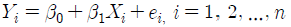
- 각 Yi의 기댓값은 β0+β1X1로 주어진다.
- 오차항 ei와 Yi는 동일한 분산을 갖는다.
- β0는 Xi가
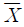
일 경우 Y 의 반응량을 나타낸다. - 모든 Yi들은 상호 독립적으로 측정된다.
(정답률: 37%)
96. 500원짜리 동전 3개와 100원짜리 동전 2개를 동시에 던져 앞면이 나오는 동전을 갖기로 할 때, 기댓값은?
- 550
- 650
- 750
- 850
(정답률: 42%)
97. 두 변수 X 와 Y 의 상관계수(rxy)에 대한 설명으로 틀린 것은?
- 상관계수 rxy 는 두 변수 X 와 Y 의 산포의 정도를 나타낸다.
- 상관계수 범위는 -1 ≤ rxy ≤+1 이다.
- rxy 이면 두 변수는 선형이 아니거나 무상관이다.
- rxy = -1 이면 두 변수는 완전 상관관계에 있다.
(정답률: 25%)
98. 모평균 μ 에 대한 구간추정에서 95% 신뢰수준(confidence level)을 갖는 신뢰구간 100±5라고 할 때, 신뢰수준 95%의 의미는?
- 구간추정치가 맞을 확률이다.
- 모평균의 추정치가 100±5내에 있을 확률이다.
- 모평균과 구간추정치가 95% 같다
- 동일한 추정방법을 사용하여 신뢰구간을 반복하여 추정할 경우 평균적으로 100회 중에서 95회는 추정구간이 모평균을 포함한다.
(정답률: 50%)
99. 크기 n 인 표본으로 신뢰수준 95%를 갖도록 모평균을 추정하였더니 신뢰구간의 길이가 10이었다. 동일한 조건하에서 표본의 크기만을 1/4로 줄이면 신뢰구간의 길이는?
- 1/4로 줄어든다.
- 1/2로 줄어든다.
- 2배로 늘어난다.
- 4배로 늘어난다.
(정답률: 52%)
100. 다음 중 일원분산분석이 부적합한 경우는?
- 어느 화학회사에서 3개 제조업체에서 생산된 기계로 원료를 혼합하는데 소요되는 평균시간이 동일한지를 검정하기 위하여 소요시간(분)자료를 수집 하였다.
- 소기업경영연구에 실린 한 논문은 자영업자의 스트레스가 비자영업자보다 높다고 결론을 내렸다. 5점 척도로 된 15개 항목으로 직무스트레스를 부동산중개업자, 건축가, 증권거래인들을 각각 15명씩 무작위로 추출하여 조사 하였다.
- 어느 회사에 다니는 회사원은 입사시 학점이 높은 사람일수록 급여를 많이 받는다고 알려져 있다. 30명을 무작위로 추출하여 평균평점과 월급여를 조사하였다.
- A구, B구, C구 등 3개 지역이 서울시에서 아파트 가격이 가장 높은 것 으로 나타났다. 각 구마다 15개씩 아파트매매가격을 조사하였다.
(정답률: 42%)